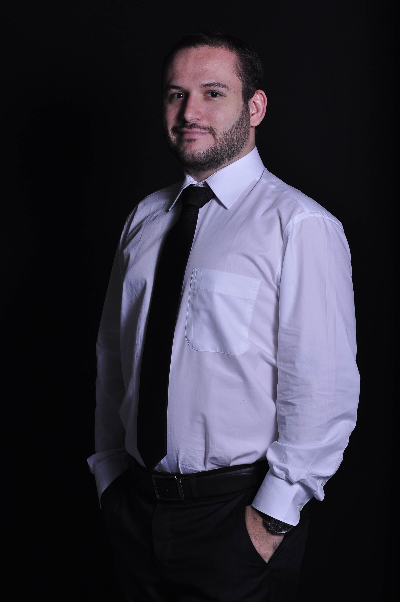

Sophia Bruggeman, PhD
Sophia (The Netherlands, 1979) studied Biology at the University of Nijmegen, the Netherlands. As PhD student, she worked at the Netherlands Cancer Institute on the role of Polycomb group genes in brain development and cancer (2008, cum laude). She next moved to King's College London to work on the development of the chick and zebrafish forebrain on a KWF postdoctoral fellowship. This fellowship was completed at the European Research Institute for the Biology of Ageing (ERIBA/University Medical Center Groningen).
After awardance of a Rosalind Franklin fellowship (tenure track position) and a KWF Cancer Research career award, Sophia started her own research group at the Department of Pediatric Oncology and Hematology/Pediatrics, UMCG (2014). Her research aims at understanding how normal neurodevelopmental processes influence pediatric brain cancer initiation and progression.
Anneke van Dijk
After completing an internship in the lab of Prof. dr. Eveline de Bont, Anneke joined the MD/PhD program at the UMCG. This program offers medical students the opportunity to combine their Master phase with a PhD-training to obtain an M.D. and Ph.D. degree in five years instead of the regular 3+4 years. After two years of clinical internships she returned to the Pediatric Oncology lab to start her PhD in June 2018. She works under the supervision of Prof. dr. de Bont and dr. Bruggeman on the role of histone modifications in acute myeloid leukemia, focusing on protein expression patterns. The project is carried out in close collaboration with the lab of Prof. Kornblau at the MD Anderson Cancer Center in Houston, USA.

Eduardo S. C. Magalhaes, MD
In 2016, Eduardo completed a one-year research internship as an undergraduate medical student from Brazil (granted by the Science without Borders Program (SwB) scholarship) at the Pediatric Oncology Department from the University Medical Center Groningen (UMCG), under the supervision of Prof. dr. Eveline de Bont. In December 2016, he enrolled in a sandwich-PhD program between the Federal University of Rio de Janeiro (UFRJ), in Brazil, as part of the MD/PhD program from UFRJ, and at the Rijksuniversiteit Groningen (RUG), in the Netherlands, as part of the Abel Tasman Talent Program (ATTP) from RUG. In 2018, he obtained his MD from UFRJ. His current work is focused on determining the role of a metabolic protein family in the glioblastoma multiforme (GBM) progression. This PhD project is co-supervised by Prof. dr. Eveline deBont, Prof. dr. Barbara Bakker, dr. Sophia Bruggeman (Dutch partners) and Prof. dr. Flavia Lima (Brazilian partner)".